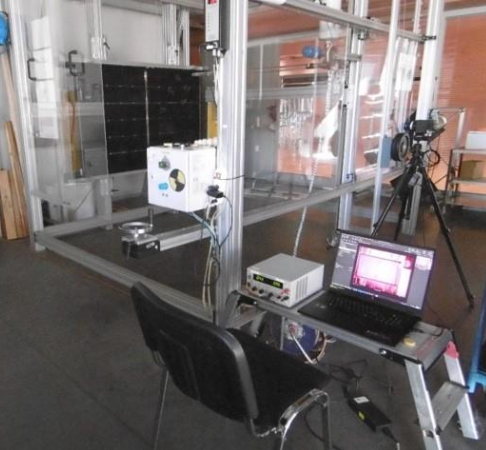
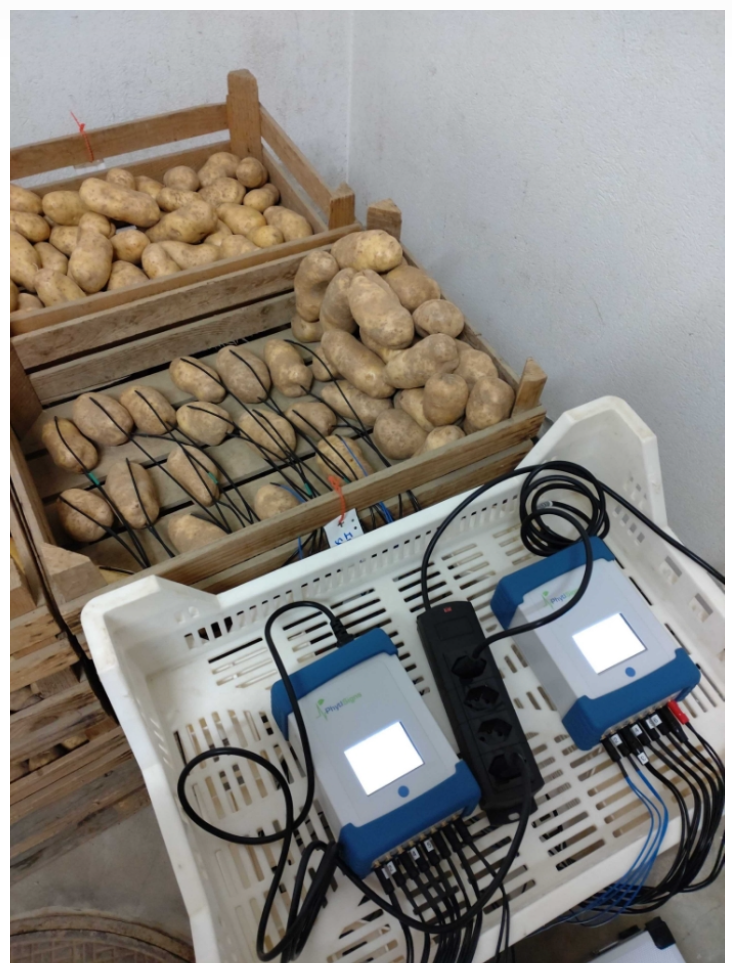
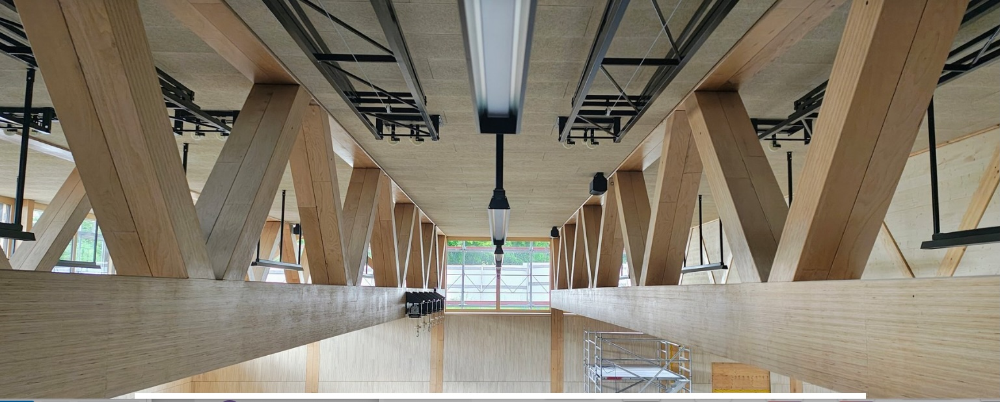
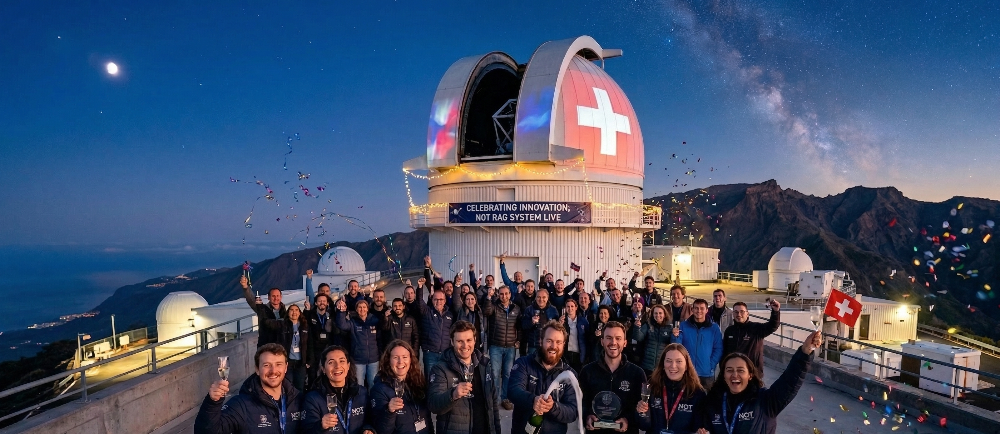
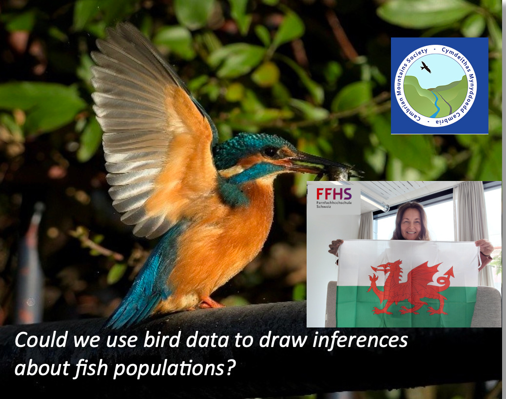
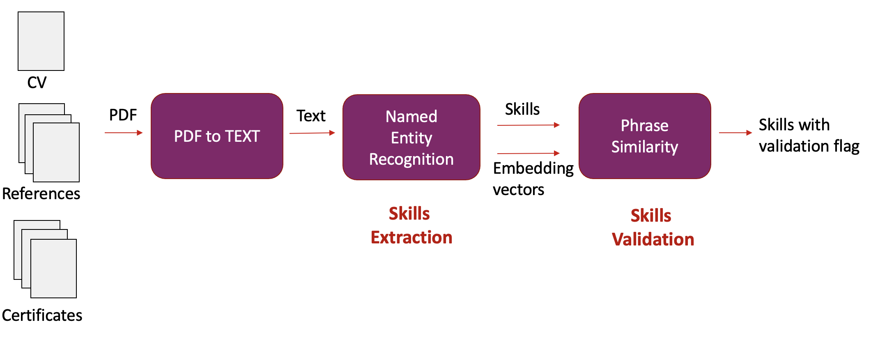

Current Research & Projects
Pioneering solutions in Deep Learning, Computer Vision, and Retrieval-Augmented Generation.

Project EAGLE
Deep Learning approach to photovoltaics reliability.

Project PRONTO
ML forecasting of potato sprouting for sustainable storage.

Holzbau AI
Computer vision for quality control in timber construction.

RAG for Nordic Optical Telescope
Retrieval-augmented answers over observatory knowledge.

Soundscapes / BirdNET
Automated biodiversity analytics from audio data.

SkillsFinder
Automatic skills extraction and profile validation platform.


Project EAGLE
A Deep Learning Approach to Photovoltaic Reliability
As the world scales up solar installations to meet carbon reduction goals, the long-term reliability of photovoltaic (PV) systems becomes a critical economic and environmental factor. Project EAGLE, a collaboration between FFHS and SUPSI, addresses this by moving beyond traditional manual inspections toward an automated, AI-powered diagnostic framework.
The Challenge: Hidden Defects
Solar panels are exposed to harsh environments for decades. Over time, they develop hidden defects such as micro-cracks, moisture ingress, or cell hotspots that are invisible to the naked eye but significantly reduce energy yield. Detecting these defects across large solar farms is traditionally slow, expensive, and subjective.
The Innovation: Multi-Spectral AI Analytics
The EAGLE project pioneered a methodology using Computer Vision and Deep Learning to analyze panel images across three spectral bands:
- • Electroluminescence (EL): "X-raying" cells to identify internal cracks.
- • Ultraviolet Fluorescence (UVf): Detecting aging and chemical changes in encapsulant materials.
- • Visible (VI): Capturing external damage such as soiling or glass breakage.
To automate diagnosis at scale, the team developed specialized Convolutional Neural Networks (CNNs) and Vision Transformers (ViTs) for high-precision defect classification.
Key Technical Highlights
- • Multimodal Fusion: Correlating defect signatures across modalities with electrical performance loss.
- • State-of-the-Art Architecture: Leveraging models such as EfficientNet and Segment Anything (SAM) to isolate and diagnose individual solar cells within modules.
- • Predictive Maintenance: Quantifying degradation to guide optimal cleaning, repair, and replacement decisions for improved ROI.
Real-World Impact
Findings from Project EAGLE, presented at the EU PVSEC conference in Bilbao, provide a scalable blueprint for smart operations and maintenance (Smart O&M). By automating solar health checks, EAGLE helps ensure that the green transition is built on durable, high-performing infrastructure.
Contributors: Ralf Jandl and Danuta Paraficz and Natasa Sarafijanovic-Djukic.

Project PRONTO
Predicting potato sprouting to optimize tuber storage and reduce agricultural waste.
Project PRONTO addresses a major challenge in agricultural supply chains: predicting and controlling the sprouting of stored potatoes. By analyzing electrophysiological plant signals with machine learning, the project can forecast sprouting weeks in advance.
This approach reduces reliance on chemical sprout suppressants and minimizes food waste, contributing to more sustainable and cost-effective storage practices for Swiss agriculture.
Partners
Agroscope & Vivent SA
Contributors: Aris Marcolongo and Natasa Sarafijanovic-Djukic.
RAG for N.O.T.
Retrieval-Augmented AI for Observatory Knowledge Access
In collaboration with the Nordic Optical Telescope (NOT) on La Palma, ADA is developing a domain-specific Retrieval-Augmented Generation (RAG) system to support astronomers and technical teams in their daily work.
The objective is to make complex observatory documentation, operational procedures, and scientific logs searchable through natural-language queries while preserving traceability and factual reliability.
Core Challenge
Critical observatory knowledge is distributed across technical manuals, instrument notes, and historical logs. Traditional search workflows are time-consuming and can make it difficult to retrieve context quickly during operations.
Technical Approach
- • Document Retrieval Layer: Indexing trusted observatory sources for relevant context selection.
- • Grounded Generation: Generating answers conditioned on retrieved evidence, not on model memory alone.
- • Citation and Verifiability: Returning source-linked responses to support transparent decision-making.
Expected Impact
The platform reduces search friction, accelerates expert workflows, and lowers the risk of unsupported responses by grounding outputs in trusted records. This creates a practical AI assistant tailored to scientific infrastructure environments.
Contributors: Danuta Paraficz and Natasa Sarafijanovic-Djukic.
The Soundscapes Project
The Soundscapes project (also known as the Cambrian Soundscapes initiative) was launched in January 2024 by the Cambrian Mountains Society to systematically collate and analyze data on the region's biodiversity. The project was initiated because existing biodiversity records for the Cambrian Mountains were found to be patchy and inconsistent, making it difficult to determine exact population trends.
Technology & Methodology
The project utilizes AudioMoths, which are low-cost bioacoustic monitoring devices that can record for up to 189 hours and be left in the field for months. The Society deployed 25 of these recorders across various habitats, set to a 24-hour schedule where they record sound for one minute out of every ten.
Origins
The idea was proposed by member Guy Bennett following a successful pilot survey on his family's land in Cilycwm, which identified unexpected rare birds like the yellow wagtail and yellow-browed warbler.
FFHS Partnership & Data Processing
Initially, the Society used BirdNET software to identify bird species from the recordings. However, the sheer volume of data led to a strategic partnership with the Big Data team from Fernfachhochschule Schweiz (FFHS) in Zurich, including Professor Joachim Steinwendner and Dr. Danuta Paraficz. This team provides the computing power necessary to process massive datasets, demonstrating how academic institutions can support real-world conservation efforts.
Scientific Impact
Partnering with a world-class academic team provides the project's research with substantial scientific credibility, which is essential when a small volunteer-led organization presents its findings to the broader scientific community.
Future Vision
While currently focused on bird populations and migratory patterns, the Society hopes to expand the project to identify other fauna, such as bats and small mammals. There is also interest in potentially using bird data to draw inferences about fish populations.
Contributors: Joachim Steinwendner and Danuta Paraficz
SkillsFinder
New platform for automatic skills extraction & profiles validation to identify talents
This is a joint project with the start-up company Skills Finder AG, funded by Innosuisse. The goal of the project is to build a platform for processing job application documents that automates the extraction of relevant information from candidates’ CVs and validates this information against candidates’ references and certificates. Our processing pipeline uses the latest advances in both document image processing and Natural Language Processing (NLP).
The first step in processing any document is to extract the text while taking the correct reading order into account. Since CVs have highly diverse layouts, none of the existing tools were able to extract the text correctly. To detect these complex layouts, we train a CV layout model using Deep Layout Parser, a unified toolkit for deep learning-based document image analysis.
The next step is an NLP component for information extraction. We use Named Entity Recognition (NER) with a pretrained multilingual BERT model, which we fine-tune on our dataset using custom labels.
The final step in our processing pipeline is information validation. We calculate semantic similarity between word phrases using output feature vectors from the BERT model and mean pooling.
Conference: Swiss Text Analytics Conference (SwissText) 2022
Presentation: SwissText 2022
Contributors: Natasa Sarafijanovic-Djukic and Beatrice Paoli.
Holzbau AI
The project, titled "Architectural Knowledge Retrieval (The Holzbau RAG)," is a collaboration between Makiol Wiederkehr AG (MW) and the Laboratory for Web Science (LWS/FFHS). It successfully validated the feasibility of an intelligent, on-premise AI search system designed to eliminate significant manual search inefficiencies.
Our research develops on-premise AI models that make complex architectural and construction knowledge instantly accessible, supporting the digital transformation of sustainable Swiss timber industries (Industry 4.0).
Contributors: Danuta Paraficz and Natasa Sarafijanovic-Djukic.
STACK4FFHS
LWS Archive Project
Stack4FFHS ist ein internes Lehrentwicklungsprojekt. Stack ist ein Moodle-Plugin, das es erlaubt, Aufgaben zu stellen, in denen die Studierenden als Antwort mathematische Ausdrücke und Formeln eingeben können.
Da die Darstellung einer Formel in der Regel nicht eindeutig ist, kann die Eingabe nicht einfach als Text überprüft werden; vielmehr wird sie mit Hilfe des Computeralgebrasystems Maxima geparst und überprüft und dann den Studierenden abhängig von der Lösung ein Feedback gegeben.
Im Rahmen des Projekts werden in Moodle Fragesammlungen erstellt mit Fragen zu den Themen Mathematikgrundlagen, Analysis, diskrete Mathematik und Lineare Algebra.
Projektdauer: Modular aufgebaut, mehrere Semester (Ressourcen abhängig)
Ansprechperson: Urs-Martin Künzi
Measure Based on Graph Automorphism
LWS Archive Project
Das LWS ist Projektpartner im Projekt «Measure Based on Graph Automorphism» von Matthias Dehmer von der FH Steyr.
Ziel des Projektes ist die Untersuchung von Invarianten auf Graphen, insbesondere von solchen, die durch Automorphismen definiert werden. Es wird untersucht, welche Beziehungen es zwischen verschiedenen Invarianten gibt und inwiefern diese Invarianten innerhalb gewisser Graphklassen Graphen eindeutig klassifizieren können.
Kontakt: Urs-Martin Künzi
Projektdauer: 1.2.19 - 30.9.2020
SUVA 2 (Dienstleistungsprojekt)
Deep Learning for Fraud Detection
Die Schweizerische Unfallversicherungsanstalt (SUVA) versucht vermehrt Methoden des Machine Learning zur Optimierung von Aufgaben in den unterschiedlichen Versicherungsabteilungen einzusetzen. Im Speziellen geht es in diesem Projekt um Betrugserkennung im Personenversicherungswesen mit Mitteln des Deep Learning.
Es handelt sich hier um eine Form der Erkennung von statistischen Ausreissern. Die Daten kennzeichnen sich durch eine hohe Dimensionalität (bis zu 1500 Merkmale) und einem hohen Grad an Klassenassymetrie (Betrugsdaten im Promillebereich). Nach Vorarbeiten mit traditionellen Methoden der Statistik und Machine Learning liegt der Schwerpunkt in diesem Projekt auf der Tauglichkeitsanalyse von überwachten (Deep Neural Nets, Generative Adversarial Networks) und unüberwachten (Autoencodervarianten und Boltzmann Maschinen) Methoden des Deep Learning.
Kontakt: Joachim Steinwendner
Projektdauer: 3 Monate
Contributors: Joachim Steinwendner.
Multi-physics Platform for DED
Additive Manufacturing Simulation
DED-In718 zielt auf die Realisierung einer Simulations- und Steuerungsplattform für die Additive Manufacturing (AM)-Technologie namens Direct Energy Deposition (DED) ab, die für Anwendungen mit der Legierung Inconel 718 optimiert ist.
Sie wird die Robustheit von DED verbessern, die Produktionskosten und die Zeit bis zur Markteinführung reduzieren, indem sie eine genaue Vorhersage der Geometrie von Inconel 718-Teilen zur Unterstützung der Prozessplanung und -steuerung durch die Integration von experimentellen Daten durchführt.
Methoden: Künstliche Intelligenz, CNNs, End-to-End Learning
Projektdauer: 1 Jahr
Kontakt: Martina Perani
Contributors: Beatrice Paoli and Ralf Jandl.
Trigger Tools & Algorithms in Homecare
Chronically Ill Patient Management
Das interne Projekt wird in Zusammenarbeit mit der Achse 6 (Social systems and public health) durchgeführt und zielt auf die Optimierung der Versorgung von chronisch kranken Patienten im Heimbereich ab.
Optimierung der oralen Eisen-Supplementierung
SNF Projekt - Schwangerschaftsmedizin
Im Projekt geht es um die Definition eines Dosierungsschemas mit maximaler Absorption und minimalen gastrointestinalen Nebenwirkungen.
Ziel ist das Studium von Nebenwirkungen bei der oralen Eisen-Supplementierung bei schwangeren Frauen. Das LWS trägt mit einer App zum Projekt bei, mithilfe derer die Frauen die Nebenwirkungen eintragen können.
Kontakt: Joachim Steinwendner, Diego Moretti
Dauer: April 2019 - März 2022
Contributors: Joachim Steinwendner.
IP-EE: RASPLAN
Landslide Risk Assessment
Ziel des Projekts ist die Entwicklung einer Technologie, die das Risiko von flachen Erdrutschen auf der Grundlage von numerischen Bodenmodellen und Wassersättigungskarten abschätzen kann.
Letztere werden aus einem spärlichen Netz automatisierter Sensoren für Bodenfeuchtigkeitsprofile und Datenverräumlichung durch Techniken des maschinellen Lernens gewonnen.
Methode: Machine Learning, Künstliche Intelligenz, Neuronale Netze
Projektdauer: 24 Monate
Ansprechperson: Martina Perani
Contributors: Beatrice Paoli and Ralf Jandl.
INNO-SBM: Customs Clearance Engine
Innocheque 2020 - Zollabfertigung Automation
Eine maschinelles Lernen Lösung, die in der Lage ist:
- • Die Plausibilität der Schweizer Zollabfertigungsnummern vorherzusagen und zu bewerten
- • Alle notwendigen Informationen im Zusammenhang mit diesen Zollabfertigungsnummern bereitzustellen
- • Gute Beschreibungen zur Klassifizierung zu nutzen
Projektdauer: 6 Monate
Ansprechperson: Beatrice Paoli
TrEndS: Trendsentdecker & Students@Risk
Learning Analytics & Student Success
Das TrEndS-Projekt ist eine Kooperation zwischen dem Laboratory for Web Science (LWS) und der MSc-Studiengangsleitung.
Es bietet die Möglichkeit einer systematischen Datenerfassung sowie -analyse, um die Potenziale des Studiengangs noch besser zu erkennen und entsprechende Massnahmen daraus abzuleiten. Dieses Projekt basiert auf den vorhandenen Datenbanken CAS Campus und Evento.
Machine Learning und Deep Learning-Algorithmen ermöglichen es künftig, automatisch Informationen aus Daten zu generieren. Das Daten-Analyse-Tool besteht aus:
- • Trendsentdecker - Analysieren von Studiengangtrends
- • Students@Risk - Früherkennung gefährdeter Studierender
Kontakt: Martina Perani
Dauer: 1.12.2018 - 29.2.2020
Neural Networks as FEA Alternative
Hasler Stiftung - Scientific Computing
Dieser Vorschlag zielt darauf ab, mit Hilfe einer neuartigen Technik zur Lösung partieller Differentialgleichungen (PDEs) auf der Basis neuronaler Netze Simulationen für industrielle Anwendungen zu ermöglichen.
Die jüngste Wiederbelebung dieser Methode in der wissenschaftlichen Literatur führte zu mehreren Veröffentlichungen zu diesem Thema, d.h. die Technik ist reif für einen Transfer in die angewandte Forschung als Alternative zur klassischen Finite Elements Analysis (FEA).
Projektdauer: 9 Monate
Ansprechperson: Urs-Martin Künzi
E-Assessment: AI-Proctored Exams
Intel Research - Home-Based Examination
Aufgrund des Coronavirus war die FFHS gezwungen, alle Lehrveranstaltungen online abzuhalten und die Prüfung des aktuellen Semesters sicherzustellen.
Deshalb wurde ein home-based Prüfungssystem getestet, um alle Prüfungen ohne Live-Proctoring online zu realisieren. Nach erfolgreichem Pilottest wurde beschlossen, alle Prüfungen mit Studierenden zu Hause durchzuführen und die Integration künstlicher Intelligenz in das Prüfungssystem zu testen.
Das Prüfungssystem basiert auf Videos vom Bildschirm und von den Testkandidaten, die zur Betrugsprävention kontrolliert werden. Kooperation mit der wissenschaftlichen Gemeinschaft der DACH-Fernuniversitäten.
Ansprechperson: Joachim Steinwendner
Projektdauer: 1 Jahr
SMAR-TI: Smart City Platform
Ticino Smart Region Development
SMAR-TI: Sviluppo di una piattaforma integrata Smart City per il Ticino zielt darauf ab, eine integrierte Plattform für die koordinierte Entwicklung aller Aktivitäten im Zusammenhang mit der Smart City und/oder Smart Region innerhalb der SUPSI und ihrer affiliierten Schulen zu schaffen und zu testen.
Dieses Instrument ermöglicht es, sich gegenüber den verschiedenen Akteuren als ein einziger Gesprächspartner zu präsentieren und die internen Kompetenzen innerhalb der Universität zu koordinieren, um dieses Thema auf integrierte, effiziente und wirksame Weise zu behandeln.
Projektdauer: 1 Jahr
Ansprechperson: Martina Perani / Beatrice Paoli